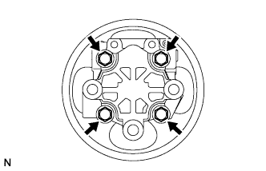
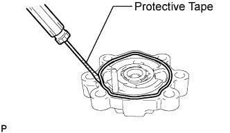
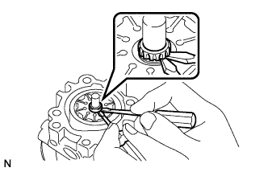
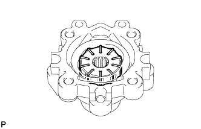
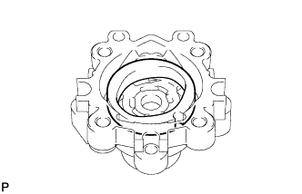
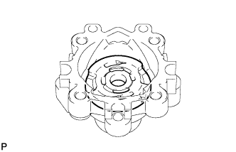
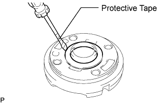
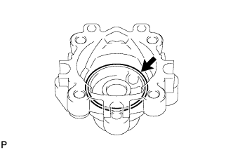
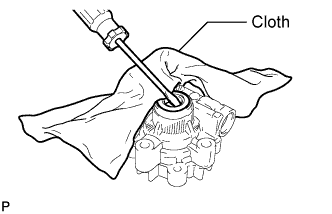

1GR-FE VANE PUMP > DISASSEMBLY |
| 1. FIX VANE PUMP ASSEMBLY |
 |
Using SST, fix the vane pump in a vise.
| 2. REMOVE POWER STEERING SUCTION PORT UNION |
 |
Remove the bolt and suction port union from the vane pump.
Using a screwdriver, remove the O-ring from the suction port union.
| 3. REMOVE FLOW CONTROL VALVE |
 |
Remove the pressure port union.
Remove the O-ring from the pressure port union.
Remove the flow control valve and compression spring.
| 4. REMOVE VANE PUMP REAR HOUSING |
 |
Remove the 4 bolts and rear housing from the front housing.
 |
Using a screwdriver, remove the O-ring from the rear housing.
| 5. REMOVE VANE PUMP SHAFT WITH VANE PUMP PULLEY |
 |
Using 2 screwdrivers, remove the snap ring from the vane pump shaft.
Remove the vane pump shaft with vane pump pulley.
| 6. REMOVE VANE PUMP ROTOR |
 |
Remove the 10 vane pump plates.
Remove the vane pump rotor.
| 7. REMOVE VANE PUMP CAM RING |
 |
Remove the cam ring from the front housing.
| 8. REMOVE VANE PUMP FRONT SIDE PLATE |
 |
Remove the front side plate from the front housing.
 |
Using a screwdriver, remove the O-ring from the front side plate.
 |
Remove the O-ring from the front housing.
| 9. REMOVE VANE PUMP HOUSING OIL SEAL |
 |
Using a screwdriver and piece of cloth, pry out the oil seal.